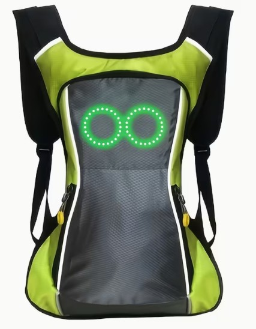

Un problema cotidiano
Las personas con enfermedad renal crónica necesitan controlar su hidratación diaria. En su rutina habitual pueden pasar muchas horas sin beber agua, lo que provoca fatiga, mareos y un peor filtrado renal.

La solución
Esta bolsa de hidratación inteligente actúa como un recordatorio sencillo y discreto. No utiliza pantallas ni aplicaciones complejas, solo una señal suave que ayuda a crear el hábito de beber agua.

Proyecto Serious Game
El proyecto forma parte de un Serious Game educativo centrado en la prevención de problemas derivados de una hidratación insuficiente.
Ministerio de Sanidad